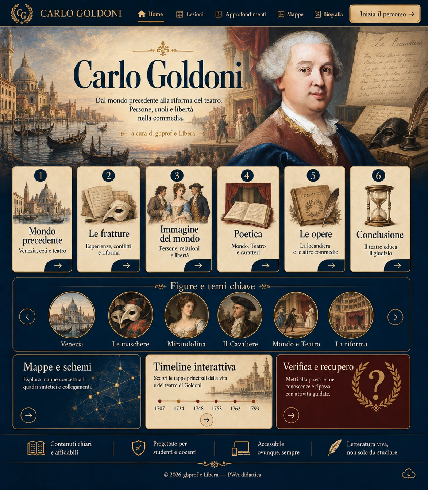

Carlo Goldoni: sei movimenti dal mondo alla commedia

HomeLezioniApprofondimenti: La locandieraMappeBiografiaInizia il percorsoIl mondo precedenteLe frattureL’immagine del mondoLa poeticaLe opere: La locandieraConclusioneVeneziaLe maschereMirandolinaIl CavaliereMondo e TeatroLa riformaMappe e schemiTimeline interattivaVerifica e recuperoEsplora il tema precedenteEsplora il tema successivoInstallazione e uso offline